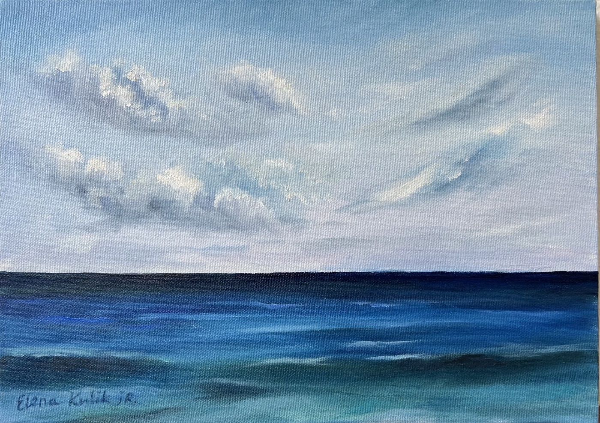
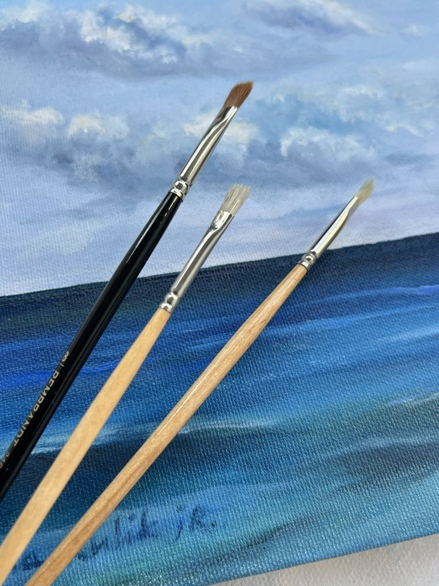
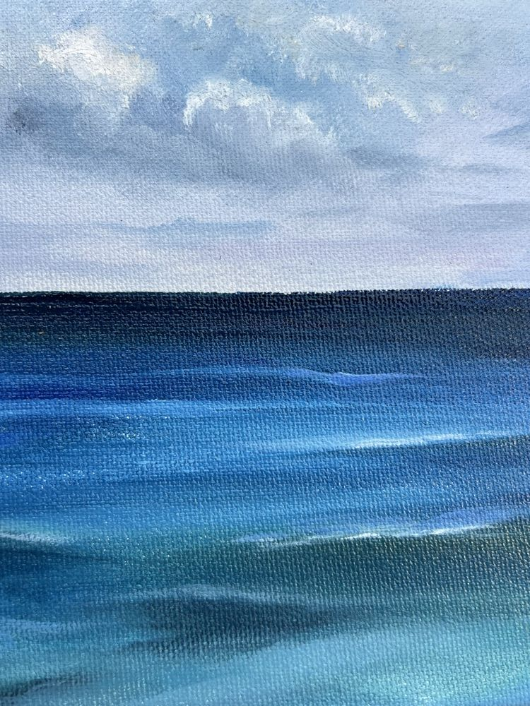
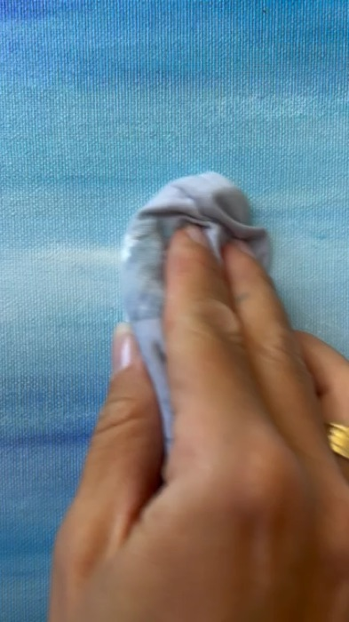
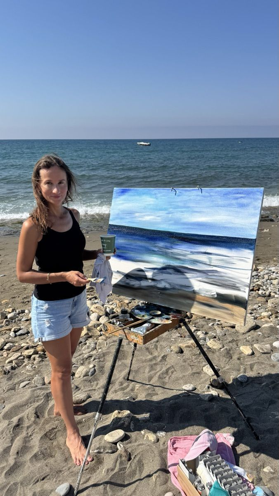
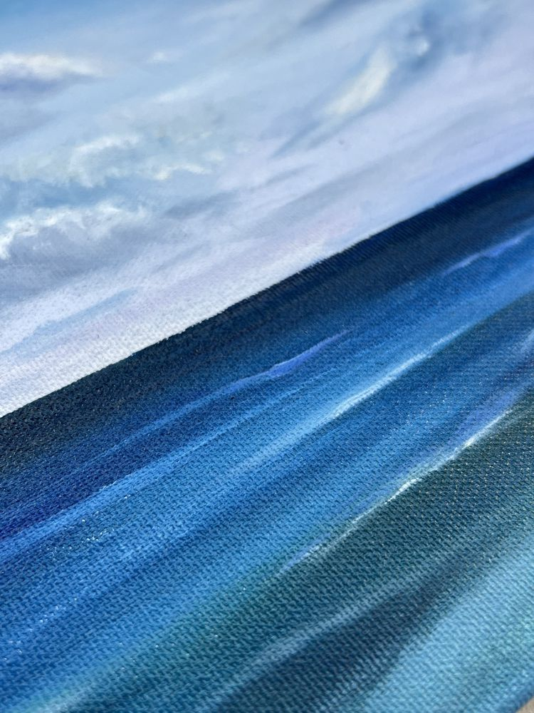
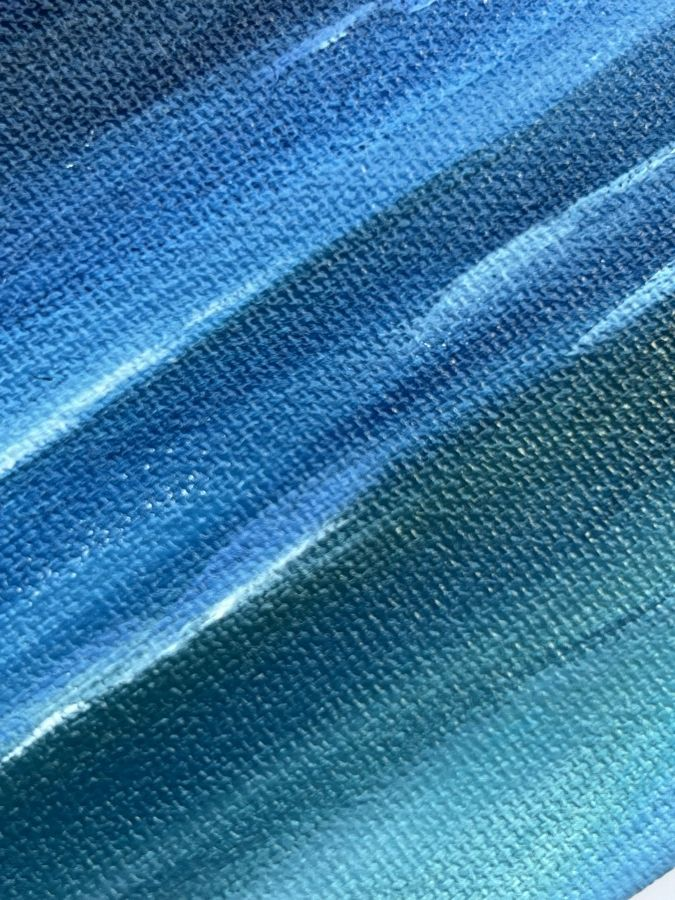

Напиши свою першу картинуолійнимифарбамиза 2 годининавіть якщо востаннє тримала пензель у школі
Море і небо. У цій картині немає жодного обʼєкта, який треба вміти малювати: ні човнів, ні будинків, ні людей. Тільки колір і горизонт — і чотири уроки, де показаний кожен мазок.

🖐Без досвіду — навіть якщо ти жодного разу не тримала в руках олійні фарби
🍽Без мольберта, рами й майстерні — потрібен звичайний стіл на кухні
🧽Помилку стираєш ганчіркою — олійні фарби дозволяють переписати будь-який невдалий мазок
390грн2390 грн−84%
Після оплати ти одразу потрапиш у Telegram-бот. Перший урок прийде наступного ранку.
Міні-курс · 4 уроки · старт завтраМоре і небо · Полотно 25×35 · 2 годиниМіні-курс · 4 уроки · старт завтраМоре і небо · Полотно 25×35 · 2 години
🎁📄🖼
Забери міні-курсдо кінця таймера — і отримай 3 бонуси
10:00
Бонус 1
PDF🎨
Список матеріалів для картини під будь який бюджет
🎯Результат: ти заходиш у художній магазин зі списком у телефоні й виходиш за 5 хвилин рівно з тим, що потрібно для цієї картини.
Що всередині
Точний перелік того, що купити: кольори олійних фарб із назвами, два щетинні пензлі, полотно та палітра. До кожної фарби вказаний аналог українського бренду ROSA — щоб не переплачувати за імпорт там, де він не потрібен. З орієнтовними цінами і поясненням, що можна замінити, а що ні.
Бонус 2
PDF🆘
Гайд: рятівний план "Що робити, якщо хочеться кинути картину на середині роботи"
🎯Результат: ти не кидаєш картину на середині, а знаєш, який саме мазок покласти наступним.
Що всередині
Момент, коли ти дивишся на напівготове полотно і думаєш «ні, щось не те», настає майже в кожного. У гайді — 5 причин, чому це відбувається, і що робити з кожною: кольори стали брудними, деталей забагато, фон сперечається з головним, ти порівнюєш себе з чужою роботою, або просто втомилось око.
Бонус 3
PDF🖼
Гайд «Як органічно розмістити олійний живопис в інтерʼєрі»
🎯Результат: картина займає своє місце на стіні, а не стоїть за шафою.
Що всередині
На якій висоті вішати картину, щоб вона не «губилась» на стіні, як її підсвітити, щоб було видно фактуру мазка, і як розмістити так, щоб вона справді прикрашала вашу оселю.
У цій картині немає нічого, що можна намалювати неправильно
Більшість людей кидають малювання на першій же роботі — і майже завжди з однієї причини: вони обрали складний сюжет.
💐Букет🐈кота🧑🎨портрет🏘вуличку з будинками
😬
Там одразу видно, що вийшло криво: у кота одне око вище за друге, будинок завалився, пропорції поїхали.
Морський пейзаж влаштований інакше.
✏️
Тут немає малюнка
На полотні лише дві великі площини — небо і вода — та лінія горизонту між ними. Пензель ти береш одразу, з першої хвилини.
🔍
Тут немає дрібних деталей
Ні пальців, ні листя, ні вікон, ні складок тканини. Уся картина пишеться двома щетинними пензлями великими мазками.
⚖️
Тут немає з чим порівнювати
А море не буває «неправильним». Воно буває темнішим, світлішим, зеленішим — і будь-який твій варіант лишається морем.
📐
Тут маленьке полотно
25×35 см — розмір, який поміщається на кухонному столі й закривається за один сеанс.
І при цьому робота не виглядає як «навчальна вправа». Це закінчена інтерʼєрна картина, яку вішають у вітальні й показують гостям.
Проста картина — це половина справи. Друга половина — фарби, якими ти її пишеш.
💧⚔️🎨
Новачкам радять почати з акварелі.Це найгірша порада для того, хто боїться зіпсувати роботу з першого мазка
Логіка ніби зрозуміла: акварель дешевша, її треба менше, вона «легша». Насправді акварель — одна з найскладніших технік у живописі. Просто про це чомусь не говорять уголос.
⚖️
Ось чесне порівняння по чотирьох речах, від яких залежить, чи дійде новачок до готової картини.
Гортай →
🚫Помилка
✕Акварельмазок ліг на папір — і він там назавжди. Взяла занадто темний тон? Не виправиш. Фарба розтеклася не туди? Не виправиш. Одна невдала пляма — і аркуш можна викидати.
✓Оліяпоки фарба мокра — знімаєш невдалий мазок ганчіркою. Висохла — перекриваєш новим шаром. Полотно не запамʼятовує твоїх помилок.
⏱Час
✕Акварельтреба встигнути покласти всі сусідні мазки, поки папір вологий. Відволіклася на пʼять хвилин — краї підсохли, і наступний мазок ляже жорсткою межею.
✓Оліясохне днями. Можна відійти, приготувати вечерю, відповісти на дзвінок і повернутися до тієї самої картини.
🎯Контроль
✕Акварельколір і форма мазка залежать від кількості води на пензлі. Це навичка, яка напрацьовується місяцями — і доти кожна робота виходить непередбачуваною.
✓Оліяфарба лежить там, куди ти її поклала. Рівно стільки, скільки ти поклала.
🏁Що лишається в кінці
✕Акварельаркуш паперу, який треба нести в багетну майстерню — паспарту, скло, рама. Плюс час і гроші зверху.
✓Оліяполотно на підрамнику. Вішаєш на цвях того самого дня.
🧽
Саме тому першу в житті картину варто писати олією: тут помилка не коштує тобі роботи, а забирає одну хвилину й одну ганчірку.
🙋♀️🖌💭
Цей міні-курс для тебе, якщо ти:
Гортай →
01🖌
Ніколи не малювала фарбами
Не знаєш, з якого боку братися за пензель.
02🏫
Малювала в школі, а потім кинула
Минуло тридцять років, а фраза досі памʼятається дослівно.
03📦
Купила фарби — і вони лежать
Не через лінь, а тому що незрозуміло, з чого починати.
04💧
Пробувала акварель — і розчарувалась
Насправді ти просто почала з найскладнішої техніки.
05🖼
Хочеш картину, яку зробила сама
Роботу, про яку можна сказати: це написала я.
06🤫
Хочеш дві години тиші в голові
Думки про роботу, новини й побут відступають самі.
Якщо впізнала себе хоча б в одному пункті — ця картина цілком тобі під силу.
Картину олією не треба нікуди нести — ти вішаєш її того ж дня
Техніка вирішує не лише те, як ти пишеш, а й те, що в тебе залишиться, коли робота закінчена.
🖼Не потрібна рама, паспарту і скло01
🪜Не потрібен мольберт02
📦Картина закінчена з усіх боків03
🎁Її легко подарувати04
Чотири урокивід порожнього полотна до картини на стіні
4 уроки · домашнє завдання після кожного уроку · доступ у Telegram-боті на рік
Урок 1
Як організувати робоче місце для картини навіть на звичайному кухонному столі?

Що в уроці
як обрати матеріали саме під цю картину: 12 кольорів, два пензлі, полотно 25×35
як розкласти фарби, палітру й полотно на кухонному столі, щоб нічого не заважало руці
як розводити олійну фарбу медіумом до потрібної густоти
як мити й зберігати щетинні пензлі, щоб вони не задубіли після першої картини
🎯Результат: у тебе на столі лежить розкладений набір фарб, розведена фарба і чисте полотно 25×35. Ти сідаєш за стіл і пишеш першу картину.
Урок 2
Як, малюючи небо, за 2 прості кроки закласти настрій картини та колір моря?
Що в уроці
як обрати настрій майбутньої картини: ранок, полудень чи вечір
де провести лінію горизонту на полотні і чому саме там
як поділити полотно на небо і воду
як закласти перший шар неба
де в небі покласти світло, а де тінь
як писати хмари щетинним пензлем великими мазками
🎯Результат: більша частина полотна вже зайнята небом, і разом із нею зникає страх білого аркуша.
Урок 3
Як за 3 плани написати море, яке ніколи не буває просто синім?

Що в уроці
як написати дальній план води біля лінії горизонту
як колір води змінюється з відстанню: від глибокого синього біля горизонту до смарагдового ближче до тебе
які фарби змішувати для кожного плану залежно від неба, яке ти вже написала
як покласти світло на поверхню води
як написати просту версію моря без піни й великих хвиль
🎯Результат: картина закінчена і готова до стіни вже на цьому уроці.
✋
Тут можна зупинитися.
Картина написана, і ти маєш повне право поставити крапку. Але якщо дати їй підсохнути два-три дні й повернутися до неї, можна зробити її по-справжньому твоєю.
Урок 4
Як доопрацювати хмари й море, щоб у картині зʼявився твій почерк?

Що в уроці
як підсвітити хмари і додати їм обʼєму
як зробити воду живішою кількома мазками
як виправити ділянку, яка тобі не подобається, не переписуючи всю картину
як додати контрасту між небом і водою
🎯Результат: саме тут вона набуває унікальності, і вже видно твій авторський почерк. Дві однакові роботи після цього уроку не виходять ні в кого.
Після кожного уроку ти отримуєш коротке домашнє завдання. Якщо щось не виходить, пишеш Олені й отримуєш відповідь.
🛒🖌🎨
Що потрібно купити для цієї картини
≈100 грнкоштує одна картина олією
Але якщо в тебе ще немає нічого — набір треба зібрати приблизно на 2140 грн. І його вистачить на десятки робіт: дванадцять тюбиків олії не закінчуються за один вечір, пензлі служать роками, палітра — вічно.
Це не витрати на картину.
Це витрати на фарби.
Точний список із назвами фарб, українськими аналогами й цінами ти отримаєш одразу після оплати — це перший бонус курсу.
Як проходить навчання
📱
Один урок щоранку
Після оплати ти одразу потрапляєш у Telegram-бот. Перший урок приходить наступного ранку, далі щодня ще по одному.
🎥
Відео, де видно кожен мазок
Камера стоїть над полотном, тому видно руку, нахил пензля і колір, який змішується на палітрі. Ти ставиш на паузу і йдеш далі у власному темпі.
💬
Пояснення звичайними словами
Жодних термінів на кшталт «валер» і «лесування». Візьми цей пензель, набери стільки фарби, веди ось так.
📝
Домашнє завдання після кожного уроку
Якщо щось не виходить, пишеш Олені й отримуєш відповідь.
🗓
Доступ до уроків на цілий рік
Уроки лишаються в боті 12 місяців. Захочеш написати другу картину через півроку, просто відкриєш бот.
🍽
Телефон і кухонний стіл
Більше нічого для навчання не потрібно. Планшет, комп'ютер, окрема кімната і мольберт тут не знадобляться.
✅🖼🎉
За чотири урокити:
✓Напишеш морський пейзаж олійними фарбами на полотні 25×35, навіть якщо тримаєш пензель уперше в житті
✓Дізнаєшся, які 12 кольорів потрібні для цієї картини і які з них можна замінити українськими аналогами
✓Навчишся розводити олійну фарбу медіумом до густоти, з якою зручно працювати
✓Зрозумієш, як провести лінію горизонту і поділити полотно між небом і водою
✓Навчишся писати хмари щетинним пензлем великими мазками
✓Дізнаєшся, як змішати кольори води для трьох планів моря: від глибокого синього біля горизонту до смарагдового ближче до тебе
✓Навчишся прибирати невдалий мазок ганчіркою і класти новий поверх нього
✓Зможеш доопрацювати картину через два-три дні і зробити її несхожою на жодну іншу
✓Повісиш на стіну картину, про яку скажеш: це написала я
«У неї вийде намалювати море, вона ж художниця. А в мене ні»
Це найчастіша думка, яка зупиняє людину перед покупкою будь-яких курсів з малювання. Вона виглядає логічною: я пишу картини двадцять років, виставляла свої роботи в кількох країнах, мої роботи купують.
Тільки моє навчання влаштоване інакше.
🧭
Мій досвід потрібен для того, щоб вийшла твоя картина
Кожен крок в уроках звучить конкретно: візьми ці два кольори, змішай ось так, веди пензлем звідси сюди. Тобі не доведеться розшифровувати фразу «а тут просто відчуйте колір».
🤝
Ти не змагаєшся зі мною
Твоя картина не має повторити мою. У кожного своє бачення, і це нормально. Саме тому картина і буде твоєю.
🧩
Тобі не треба нічого вигадувати
Сюжет обраний, палітра зібрана, послідовність кроків показана. Тобі лишається робота руками, а вона виходить у всіх.
Автор курсу:Олена Кулик Діріл

25+персональних виставок
24+роки досвіду в техніці олійного живопису
20+країн світу, в колекціях яких зберігаються картини
Професійна художниця, в мистецтві з дитинства, донька відомої української художниці Олени Кулик.
Створила власний стиль малювання. Віртуозно малює море олійними фарбами та володіє різними техніками, але перевагу віддає саме олії.
Повна історія
Провела 25 персональних виставок у різних країнах світу, включаючи виставки в дипломатичних установах. Картини знаходяться в музеях, також в приватних колекціях 20 країн.
Дванадцять років тому я переїхала до Туреччини. З собою був невеликий набір пастелі, і більше нічого: ні мови, ні знайомих, ні клієнтів, які лишилися в Україні. Кар'єру довелося будувати заново, з нуля.
Перша виставка в новій країні відбулася через дев'ять місяців. Усі роботи для неї я написала вже на новому місці.
Я бачу одну й ту саму історію в кожної людини, яка приходить до мене з бажанням малювати. Колись у дитинстві хтось сказав їй, що нічого не вийде. Людина повірила і не бралася за пензель тридцять років.
Мене це дратує більше за все інше в цій професії. Тому я зібрала свій спосіб писати морський пейзаж у чотири уроки, де показаний кожен мазок.
Я не обіцяю тобі, що ти станеш художницею за один вечір. Я обіцяю, що після цих уроків білий аркуш перестане тебе лякати, а на стіні висітиме картина, яку ти написала своїми руками.
Мої роботи
Ти не будеш писати жодну з цих картин. На міні-курсі ми пишемо одну конкретну роботу, простішу за всі, що ти бачиш нижче.
Гортай →


Повернення коштів
14днів гарантія
Жодних ризиків. Або в тебе на стіні з'являється твоя перша картина, або я повертаю гроші.
Я впевнена в якості цих уроків, тому даю 14 днів повної гарантії.
Якщо протягом двох тижнів ти пройдеш усі чотири уроки, напишеш свій морський пейзаж, але не побачиш у ньому цінності або очікуваного результату, я без жодних питань поверну кошти.
Повний список усього, що ти отримаєш
✓4 практичні уроки з написання морського пейзажу олією
✓Покрокова методика, де показаний кожен мазок
✓Домашнє завдання після кожного уроку
🎁БОНУС 1 Список матеріалів з українськими аналогами і цінами
🎁БОНУС 2 Гайд «Криза на середині картини»
🎁БОНУС 3 Гайд «Як повісити олійний живопис в інтер'єрі»
✓Підтримка від автора курсу
✓Доступ до всіх уроків на рік
✓Гарантія повернення коштів на 14 днів
Спеціальна ціна
10:00
390грн2390 грн−84%
Після оплати ти одразу потрапиш у Telegram-бот. Перший урок прийде наступного ранку.
Бонуси зникають разом із таймером. Далі міні-курс продається без них.
❓💬
Часті запитання
Чому так дешево? У чому підступ?
Підступу немає. Це короткий міні-курс на чотири уроки, а не велика програма на кілька місяців. Плюс це перший запуск, і я тестую цю ціну. У наступних запусках вона буде іншою.
Я взагалі ніколи не малювала фарбами. У мене вийде?
Так, і саме для таких людей ця картина й обрана. У морському пейзажі немає жодного об'єкта, який треба вміти малювати: ні човнів, ні будинків, ні людей. Ти не будуєш композицію олівцем і не рахуєш пропорції. Є небо, вода і лінія між ними.
Мені 55. Не пізно починати?
Ні. Більшість людей, які приходять до мене вчитися, старші за сорок. Малювання не вимагає ні швидкої реакції, ні сили в руках, ні гострого зору. Потрібні тільки два вільні години і бажання.
А якщо я зіпсую картину?
Олійна фарба дозволяє переписати будь-який невдалий мазок. Поки фарба мокра, ти прибираєш його ганчіркою. Коли висохла, кладеш новий шар зверху. Полотно коштує близько ста гривень, але друге тобі, найімовірніше, не знадобиться.
Скільки коштують матеріали?
Близько 2140 гривень за найдоступнішим українським брендом ROSA. Це витрати не на одну картину, а на набір фарб: дванадцяти тюбиків вистачить на десятки робіт, пензлі служать роками. Друга картина обійдеться тобі в сто гривень за нове полотно. Точний список з назвами і цінами ти отримаєш одразу після оплати.
Чи можна почати без усіх матеріалів?
Перший урок ти подивишся без фарб, він саме про підготовку. Але до другого уроку набір уже має бути на столі.
Скільки часу займе весь міні-курс?
Уроки приходять по одному щоранку протягом чотирьох днів. Сама картина пишеться приблизно за дві години в другому і третьому уроці. Четвертий урок ти виконаєш через два-три дні, коли фарба підсохне.
Де проходить навчання?
У Telegram. Після оплати ти одразу потрапляєш у бот, перший урок приходить наступного ранку. Нічого встановлювати не потрібно.
Скільки часу зберігається доступ?
Рік. Захочеш повернутися до уроків через півроку, просто відкриєш бот.
Що робити, якщо щось не виходить?
Напиши мені в підтримку, і я відповім. Плюс у тебе буде гайд «Криза на середині картини» з п'ятьма найчастішими причинами, через які робота перестає подобатись.
А якщо мені не сподобається?
Протягом чотирнадцяти днів пиши в підтримку одне повідомлення, і я поверну кошти повністю. Без анкет і без пояснень.